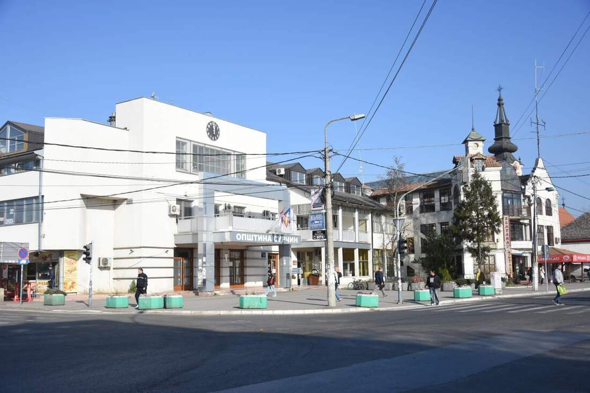
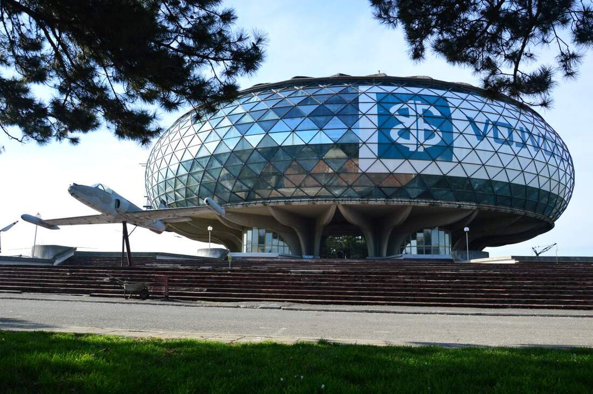
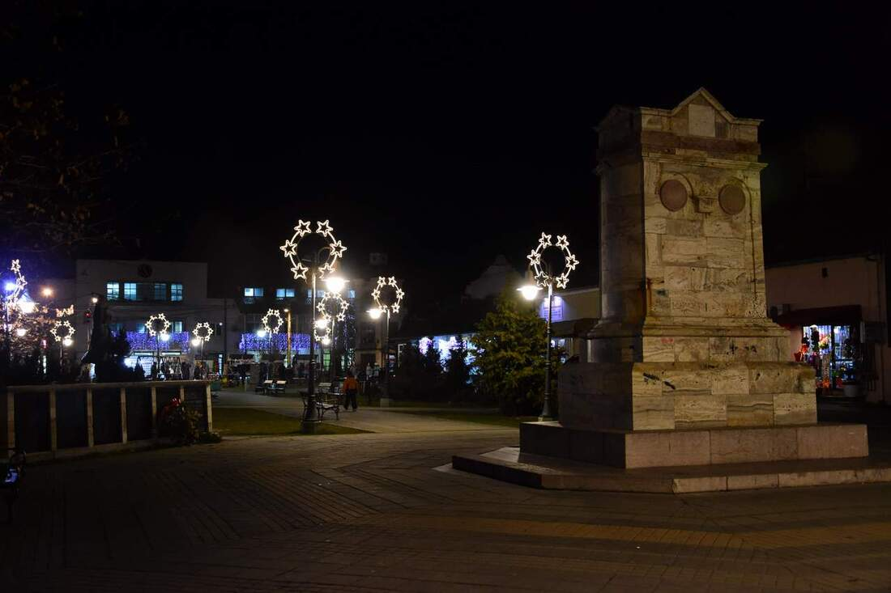

-A1 SELIDBE BEOGRAD-
SELIDBE SURČIN
EFIKASNE USLUGE PRESELJENJA SURČIN
Gradski ritam se sve više širi ka mirnijim prigradskim zonama, potreba za pouzdane i dobro organizovane selidbe Surčin postaje sve izraženija. Naša agencija odgovara na te zahteve pružajući uslugu koja je prilagođena savremenom načinu života – brzu, fleksibilnu i precizno isplaniranu. Bilo da menjate adresu unutar naselja ili se doseljavate u ovaj deo Beograda, važno je imati tim koji poznaje teren i dobru koncepciju tako da sve protekne efikasno i bez zastoja.
Ono što izdvaja A1 selidbe na teritoriji Surčina jeste posvećenost detaljima i individualan pristup svakom klijentu. Svako preseljenje je drugačije – razlikuju se količina stvari, pristup objektu, spratnost i specifični zahtevi. Zbog toga se svaki posao organizuje unapred, uz procenu potrebnog vozila, broja radnika i vremena realizacije. Na taj način se izbegavaju kašnjenja, dodatni troškovi i nepotrebne komplikacije koje su česte kod loše organizacije.
Pored samog prevoza, mi vam nudimo i dodatne usluge poput nošenja, utovara i istovara, kao i zaštite tokom transporta nameštaja. Posebna pažnja prilikom selidbe Surčin posvećuje se osetljivim i vrednim predmetima kako bi stigli na novu adresu bez oštećenja. Iskusan tim zna kako da pravilno rukuje kabastim i teškim predmetima, čak i u situacijama kada su uslovi otežani, poput uskih hodnika ili viših spratova bez lifta.
Ako tražite pouzdane i profesionalne selidbe u Surčinu, A1 selidbe Beograd predstavljaju siguran izbor za brz i organizovan transport vaših stvari. Kombinacija iskustva, odgovornosti i dobre logistike omogućava da se ceo proces obavi u najkraćem mogućem roku, uz maksimalnu pažnju prema vašoj imovini. Cilj nije samo da se stvari prebace sa jedne lokacije na drugu, već da preseljenje protekne jednostavno, sigurno i bez stresa za klijenta.

KAKO MI REALIZUJEMO SELIDBE SURČIN
A1 agencija za selidbe ne prepušta stvari slučaju, kod nas se sve zasniva na jasno definisanim koracima koji omogućavaju brzu, sigurnu i efikasnu realizaciju. Svaka selidba u Surčinu planira se unapred i prilagođava konkretnim uslovima na terenu, jer na samu organizaciju utiču faktori poput količine stvari, pristupa objektu i logistike transporta . Naš cilj je da svaki klijent dobije precizno organizovanu uslugu, bez improvizacije i nepotrebnog gubljenja vremena.
Precizna procena i planiranje preseljenja
Na samom početku vršimo detaljnu procenu obima posla kako bismo tačno utvrdili šta je potrebno za realizaciju selidbe. Analiziramo količinu nameštaja, spratnost objekta, pristup lokaciji i eventualne specifične zahteve. Na osnovu toga pravimo plan koji obuhvata izbor vozila, broj radnika i dinamiku posla. Dobro planiranje je ključ svakog uspešnog preseljenja jer omogućava da se izbegnu nepredviđene situacije i kašnjenja .
Profesionalno pakovanje i zaštita stvari
Nakon planiranja prelazi se na pripremu i pakovanje stvari. Koristimo kvalitetne materijale poput zaštitnih folija, kartona i transportnih kutija kako bi svaki predmet bio adekvatno obezbeđen. Posebna pažnja posvećuje se lomljivim i vrednim predmetima, jer pravilno pakovanje značajno smanjuje rizik od oštećenja tokom transporta. Sistematično pakovanje po kategorijama i prostorijama dodatno olakšava kasnije raspakivanje.
Demontaža i priprema nameštaja
Kabasti komadi nameštaja često zahtevaju demontažu pre transporta kako bi se bezbedno izneli i preneli. Naš tim vrši profesionalnu demontažu nameštaja kao što su ormari, kreveti, kuhinje i drugi elementi, uz pažljivo obeležavanje delova radi lakše ponovne montaže. Ovaj korak se upražnjava kod selidbi u Surčinu, kao i na mestima gde su objekti sa specifičnim pristupom ili ograničenim prostorom za iznošenje.

Siguran transport i organizovan prevoz
Transport je faza u kojoj iskustvo dolazi do izražaja. Na osnovu procene biramo odgovarajuće vozilo kao što su:
kako bi se sve stvari prevezle efikasno i bez nepotrebnih tura. Pravilno raspoređivanje tereta u vozilu omogućava stabilnost tokom vožnje i dodatnu sigurnost. Organizovan prevoz je ključan deo procesa jer direktno utiče na brzinu i sigurnost celog procesa.
Istovar i raspored u novom prostoru
Po dolasku na novu adresu, vrši se pažljiv istovar i unošenje stvari u prostor. Nameštaj i kutije raspoređuju se prema dogovoru sa klijentom, što značajno ubrzava proces useljenja. Naš tim vodi računa o svakom detalju kako bi prostor bio funkcionalan odmah nakon završetka selidbe u Surčinu, bez potrebe za dodatnim pomeranjem stvari.
Montaža i završna organizacija
Završni korak podrazumeva montažu nameštaja i finalno sređivanje prostora. Svi prethodno demontirani elementi se ponovo sastavljaju i postavljaju na željena mesta. Time se kompletira proces preseljenja i klijent dobija potpuno funkcionalan prostor spreman za korišćenje. Upravo ovakav sistem rada omogućava da selidbe u Surčinu budu organizovane, brze i prilagođene realnim potrebama korisnika.
ZAŠTO JE SURČIN POSTAO ATRAKTIVNA LOKACIJA ZA PRESELJENJE
Surčin je poslednjih godina doživeo značajnu transformaciju i sve češće se nalazi na listi najtraženijih lokacija za život i poslovanje u Beogradu. Nekada mirna prigradska opština danas privlači pažnju zbog odličnog balansa između urbanog razvoja i prijatnog okruženja za svakodnevni život. Upravo zbog toga raste interesovanje za selidbe Surčin, kako među porodicama, tako i među firmama koje traže funkcionalan prostor sa dobrom povezanošću.
Odlična saobraćajna povezanost
Jedan od ključnih razloga zašto se ljudi odlučuju za život u Surčinu jeste njegova strateška lokacija. Blizina autoputa, brza veza sa Novim Beogradom i centrom grada, kao i neposredna blizina aerodroma Nikola Tesla čine ovu opštinu izuzetno praktičnom za svakodnevno funkcionisanje. Zahvaljujući dobro razvijenoj infrastrukturi, postao je idealan izbor za sve koji žele mirnije okruženje, ali bez odricanja od gradske dinamike.

Mirnije okruženje i više prostora za život
Za razliku od užeg gradskog jezgra, Surčin nudi više prostora, manje gužve i znatno prijatniji ambijent za porodični život. Kuće sa dvorištima, šire ulice i manje opterećen saobraćaj doprinose kvalitetnijem načinu života. Upravo ova kombinacija mira i dostupnosti sadržaja utiče na sve veći broj ljudi koji se odlučuju na preseljenje u ovaj deo Beograda.
Razvoj infrastrukture i projekat EXPO 2027
Veliki uticaj na popularnost ove opštine ima i priprema za međunarodnu izložbu Expo 2027, koja će se održati upravo na teritoriji Surčina. Ovaj projekat podrazumeva značajna ulaganja u infrastrukturu, puteve i prateće sadržaje, što dodatno povećava vrednost nekretnina i interesovanje za život u ovom delu grada. Očekuje se da će EXPO dodatno ubrzati razvoj ovog dela grada i učiniti ga jednim od ključnih urbanih centara u narednim godinama.
Naselja u Surčinu gde vršimo selidbe
Kako bismo pokrili potrebe klijenata na celoj teritoriji opštine, organizujemo selidbe Surčin u svim naseljima, uključujući:
- Surčin (centar)
- Ledine
- Dobanovci
- Jakovo
- Bečmen
- Progar
- Boljevci
- Petrovčić
Bez obzira na to da li se selite unutar istog naselja ili dolazite iz drugog dela Beograda, naš tim je spreman da organizuje preseljenje brzo i efikasno.
Rast potražnje i investicija
Povećana tražnja za nekretninama i dolazak novih investicija dodatno potvrđuju da Surčin postaje sve atraktivnija lokacija. Kako se razvija infrastruktura i unapređuju uslovi za život, raste i broj ljudi koji se odlučuju na preseljenje upravo ovde. To direktno utiče i na veću potrebu za profesionalnim uslugama selidbe u Surčin, jer sve više porodica i kompanija bira ovu opštinu kao svoju novu adresu.
Zahvaljujući kombinaciji dobre povezanosti, razvoja i kvalitetnog životnog okruženja, ova opština postaje idealno mesto kako za stanovanje, tako i za poslovanje. Sve veći broj firmi prepoznaje potencijal ove opštine, dok porodice u njoj vide dugoročno rešenje za kvalitetniji život. Upravo zbog toga, trend rasta interesovanja za selidbe u Surčin nastavlja da se razvija iz godine u godinu, a za potrebe kvalitetnog preseljenja pozovite našu firmu A1 selidbe.